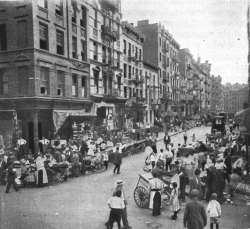

THE SPIRIT OF REFORM IN AMERICA
An Age of Criticism
Attacks on Abuses in American Life. —The crisis precipitated by the Progressive uprising was not a sudden and unexpected one. It had been long in preparation. The revolt against corruption in politics which produced the Liberal Republican outbreak in the seventies and the Mugwump movement of the eighties was followed by continuous criticism of American political and economic development. From 1880 until his death in 1892, George William Curtis, as president of the Civil Service Reform Association, kept up a running fire upon the abuses of the spoils system. James Bryce, an observant English scholar and man of affairs, in his great work, The American Commonwealth, published in 1888, by picturing fearlessly the political rings and machines which dominated the cities, gave the whole country a fresh shock. Six years later Henry D. Lloyd, in a powerful book entitled Wealth against Commonwealth, attacked in scathing language certain trusts which had destroyed their rivals and bribed public officials. In 1903 Miss Ida Tarbell, an author of established reputation in the historical field, gave to the public an account of the Standard Oil Company, revealing the ruthless methods of that corporation in crushing competition. About the same time Lincoln Steffens exposed the sordid character of politics in several municipalities in a series of articles bearing the painful heading: The Shame of the Cities. The critical spirit appeared in almost every form; in weekly and monthly magazines, in essays and pamphlets, in editorials and news stories, in novels like Churchill's Coniston and Sinclair's The Jungle. It became so savage and so wanton that the opening years of the twentieth century were well named "the age of the muckrakers."
The Subjects of the Criticism. —In this outburst of invective, nothing was spared. It was charged that each of the political parties had fallen into the hands of professional politicians who devoted their time to managing conventions, making platforms, nominating candidates, and dictating to officials; in return for their "services" they sold offices and privileges. It was alleged that mayors and councils had bargained
away for private benefit street railway and other franchises. It was asserted that many powerful labor unions were dominated by men who blackmailed employers. Some critics specialized in descriptions of the poverty, slums, and misery of great cities. Others took up "frenzied finance" and accused financiers of selling worthless stocks and bonds to an innocent public. Still others professed to see in the accumulations of millionaires the downfall of our republic.
The Attack on "Invisible Government." —Some even maintained that the control of public affairs had passed from the people to a sinister minority called "the invisible government." So eminent and conservative a statesman as the Hon. Elihu Root lent the weight of his great name to such an imputation.
Speaking of his native state, New York, he said: "What is the government of this state? What has it been during the forty years of my acquaintance with it? The government of the Constitution? Oh, no; not half the time or half way.... From the days of Fenton and Conkling and Arthur and Cornell and Platt, from the days of David B. Hill down to the present time, the government of the state has presented two different lines of activity: one, of the constitutional and statutory officers of the state and the other of the party leaders; they call them party bosses. They call the system—I don't coin the phrase—the system they call
'invisible government.' For I don't know how many years Mr. Conkling was the supreme ruler in this state.
The governor did not count, the legislature did not count, comptrollers and secretaries of state and what not did not count. It was what Mr. Conkling said, and in a great outburst of public rage he was pulled down. Then Mr. Platt ruled the state; for nigh upon twenty years he ruled it. It was not the governor; it was not the legislature; it was Mr. Platt. And the capital was not here [in Albany]; it was at 49 Broadway; Mr.
Platt and his lieutenants. It makes no difference what name you give, whether you call it Fenton or Conkling or Cornell or Arthur or Platt or by the names of men now living. The ruler of the state during the greater part of the forty years of my acquaintance with the state government has not been any man authorized by the constitution or by law.... The party leader is elected by no one, accountable to no one, bound by no oath of office, removable by no one."
The Nation Aroused. —With the spirit of criticism came also the spirit of reform. The charges were usually exaggerated; often wholly false; but there was enough truth in them to warrant renewed vigilance on the part of American democracy. President Roosevelt doubtless summed up the sentiment of the great majority of citizens when he demanded the punishment of wrong-doers in 1907, saying: "It makes not a particle of difference whether these crimes are committed by a capitalist or by a laborer, by a leading banker or manufacturer or railroad man or by a leading representative of a labor union. Swindling in stocks, corrupting legislatures, making fortunes by the inflation of securities, by wrecking railroads, by destroying competitors through rebates—these forms of wrong-doing in the capitalist are far more infamous than any ordinary form of embezzlement or forgery." The time had come, he added, to stop
"muckraking" and proceed to the constructive work of removing the abuses that had grown up.
Political Reforms
The Public Service. —It was a wise comprehension of the needs of American democracy that led the friends of reform to launch and to sustain for more than half a century a movement to improve the public service. On the one side they struck at the spoils system; at the right of the politicians to use public offices as mere rewards for partisan work. The federal civil service act of 1883 opened the way to reform by establishing five vital principles in law: (1) admission to office, not on the recommendation of party workers, but on the basis of competitive examinations; (2) promotion for meritorious service of the government rather than of parties; (3) no assessment of office holders for campaign funds; (4) permanent tenure during good behavior; and (5) no dismissals for political reasons. The act itself at first applied to only 14,000 federal offices, but under the constant pressure from the reformers it was extended until in 1916 it covered nearly 300,000 employees out of an executive force of approximately 414,000. While gaining steadily at Washington, civil service reformers carried their agitation into the states and cities. By 1920 they were able to report ten states with civil service commissions and the merit system well
intrenched in more than three hundred municipalities.
In excluding spoilsmen from public office, the reformers were, in a sense, engaged in a negative work: that of "keeping the rascals out." But there was a second and larger phase to their movement, one constructive in character: that of getting skilled, loyal, and efficient servants into the places of responsibility.
Everywhere on land and sea, in town and country, new burdens were laid upon public officers. They were called upon to supervise the ships sailing to and from our ports; to inspect the water and milk supplies of our cities; to construct and operate great public works, such as the Panama and Erie canals; to regulate the complicated rates of railway companies; to safeguard health and safety in a thousand ways; to climb the mountains to fight forest fires; and to descend into the deeps of the earth to combat the deadly coal gases that assail the miners. In a word, those who labored to master the secrets and the powers of nature were summoned to the aid of the government: chemists, engineers, architects, nurses, surgeons, foresters—the skilled in all the sciences, arts, and crafts.
Keeping rascals out was no task at all compared with the problem of finding competent people for all the technical offices. "Now," said the reformers, "we must make attractive careers in the government work for the best American talent; we must train those applying for admission and increase the skill of those already in positions of trust; we must see to it that those entering at the bottom have a chance to rise to the top; in short, we must work for a government as skilled and efficient as it is strong, one commanding all the wisdom and talent of America that public welfare requires."
The Australian Ballot. —A second line of attack on the political machines was made in connection with the ballot. In the early days elections were frequently held in the open air and the poll was taken by a show of hands or by the enrollment of the voters under names of their favorite candidates. When this ancient practice was abandoned in favor of the printed ballot, there was still no secrecy about elections. Each party prepared its own ballot, often of a distinctive color, containing the names of its candidates. On election day, these papers were handed out to the voters by party workers. Any one could tell from the color of the ballot dropped into the box, or from some mark on the outside of the folded ballot, just how each man voted. Those who bought votes were sure that their purchases were "delivered." Those who intimidated voters could know when their intimidation was effective. In this way the party ballot strengthened the party machine.
As a remedy for such abuses, reformers, learning from the experience of Australia, urged the adoption of the "Australian ballot." That ballot, though it appeared in many forms, had certain constant features. It was official, that is, furnished by the government, not by party workers; it contained the names of all candidates of all parties; it was given out only in the polling places; and it was marked in secret. The first state to introduce it was Massachusetts. The year was 1888. Before the end of the century it had been adopted by nearly all the states in the union. The salutary effect of the reform in reducing the amount of cheating and bribery in elections was beyond all question.
The Direct Primary. —In connection with the uprising against machine politics, came a call for the abolition of the old method of nominating candidates by conventions. These time-honored party assemblies, which had come down from the days of Andrew Jackson, were, it was said, merely conclaves of party workers, sustained by the spoils system, and dominated by an inner circle of bosses. The remedy offered in this case was again "more democracy," namely, the abolition of the party convention and the adoption of the direct primary. Candidates were no longer to be chosen by secret conferences. Any member of a party was to be allowed to run for any office, to present his name to his party by securing signatures to a petition, and to submit his candidacy to his fellow partisans at a direct primary—an election within the party. In this movement Governor La Follette of Wisconsin took the lead and his state was the first in the union to adopt the direct primary for state-wide purposes. The idea spread, rapidly in the West, more slowly in the East. The public, already angered against "the bosses," grasped eagerly at it. Governor Hughes in New York pressed it upon the unwilling legislature. State after state accepted it until by 1918
Rhode Island, Delaware, Connecticut, and New Mexico were the only states that had not bowed to the storm. Still the results were disappointing and at that very time the pendulum was beginning to swing backward.
Popular Election of Federal Senators. —While the movement for direct primaries was still advancing everywhere, a demand for the popular election of Senators, usually associated with it, swept forward to victory. Under the original Constitution, it had been expressly provided that Senators should be chosen by the legislatures of the states. In practice this rule transferred the selection of Senators to secret caucuses of party members in the state legislatures. In connection with these caucuses there had been many scandals, some direct proofs of brazen bribery and corruption, and dark hints besides. The Senate was called by its detractors "a millionaires' club" and it was looked upon as the "citadel of conservatism." The prescription in this case was likewise "more democracy"—direct election of Senators by popular vote.
This reform was not a new idea. It had been proposed in Congress as early as 1826. President Johnson, an ardent advocate, made it the subject of a special message in 1868 Not long afterward it appeared in Congress. At last in 1893, the year after the great Populist upheaval, the House of Representatives by the requisite two-thirds vote incorporated it in an amendment to the federal Constitution. Again and again it passed the House; but the Senate itself was obdurate. Able Senators leveled their batteries against it. Mr.
Hoar of Massachusetts declared that it would transfer the seat of power to the "great cities and masses of population"; that it would "overthrow the whole scheme of the Senate and in the end the whole scheme of the national Constitution as designed and established by the framers of the Constitution and the people who adopted it."
Failing in the Senate, advocates of popular election made a rear assault through the states. They induced state legislatures to enact laws requiring the nomination of candidates for the Senate by the direct primary, and then they bound the legislatures to abide by the popular choice. Nevada took the lead in 1899. Shortly afterward Oregon, by the use of the initiative and referendum, practically bound legislators to accept the popular nominee and the country witnessed the spectacle of a Republican legislature "electing" a Democrat to represent the state in the Senate at Washington. By 1910 three-fourths of the states had applied the direct primary in some form to the choice of Senators. Men selected by that method began to pour in upon the floors of Congress; finally in 1912 the two-thirds majority was secured for an amendment to the federal Constitution providing for the popular election of Senators. It was quickly ratified by the states. The following year it was proclaimed in effect.
The Initiative and Referendum. —As a corrective for the evils which had grown up in state legislatures there arose a demand for the introduction of a Swiss device known as the initiative and referendum. The initiative permits any one to draw up a proposed bill; and, on securing a certain number of signatures among the voters, to require the submission of the measure to the people at an election. If the bill thus initiated receives a sufficient majority, it becomes a law. The referendum allows citizens who disapprove any act passed by the legislature to get up a petition against it and thus bring about a reference of the measure to the voters at the polls for approval or rejection. These two practices constitute a form of "direct government."
These devices were prescribed "to restore the government to the people." The Populists favored them in their platform of 1896. Mr. Bryan, two years later, made them a part of his program, and in the same year South Dakota adopted them. In 1902 Oregon, after a strenuous campaign, added a direct legislation amendment to the state constitution. Within ten years all the Southwestern, Mountain, and Pacific states, except Texas and Wyoming, had followed this example. To the east of the Mississippi, however, direct legislation met a chilly reception. By 1920 only five states in this section had accepted it: Maine, Massachusetts, Ohio, Michigan, and Maryland, the last approving the referendum only.
The Recall. —Executive officers and judges, as well as legislatures, had come in for their share of
criticism, and it was proposed that they should likewise be subjected to a closer scrutiny by the public. For this purpose there was advanced a scheme known as the recall—which permitted a certain percentage of the voters to compel any officer, at any time during his term, to go before the people at a new election.
This feature of direct government, tried out first in the city of Los Angeles, was extended to state-wide uses in Oregon in 1908. It failed, however, to capture popular imagination to the same degree as the initiative and referendum. At the end of ten years' agitation, only ten states, mainly in the West, had adopted it for general purposes, and four of them did not apply it to the judges of the courts. Still it was extensively acclaimed in cities and incorporated into hundreds of municipal laws and charters.
As a general proposition, direct government in all its forms was bitterly opposed by men of a conservative cast of mind. It was denounced by Senator Henry Cabot Lodge as "nothing less than a complete revolution in the fabric of our government and in the fundamental principles upon which that government rests." In his opinion, it promised to break down the representative principle and "undermine and overthrow the bulwarks of ordered liberty and individual freedom." Mr. Taft shared Mr. Lodge's views and spoke of direct government with scorn. "Votes," he exclaimed, "are not bread ... referendums do not pay rent or furnish houses, recalls do not furnish clothes, initiatives do not supply employment or relieve inequalities of condition or of opportunity."
Commission Government for Cities. —In the restless searching out of evils, the management of cities early came under critical scrutiny. City government, Mr. Bryce had remarked, was the one conspicuous failure in America. This sharp thrust, though resented by some, was accepted as a warning by others.
Many prescriptions were offered by doctors of the body politic. Chief among them was the idea of simplifying the city government so that the light of public scrutiny could shine through it. "Let us elect only a few men and make them clearly responsible for the city government!" was the new cry in municipal reform. So, many city councils were reduced in size; one of the two houses, which several cities had adopted in imitation of the federal government, was abolished; and in order that the mayor could be held to account, he was given the power to appoint all the chief officials. This made the mayor, in some cases, the only elective city official and gave the voters a "short ballot" containing only a few names—an idea which some proposed to apply also to the state government.
A further step in the concentration of authority was taken in Galveston, Texas, where the people, looking upon the ruin of their city wrought by the devastating storm of 1901, and confronted by the difficult problems of reconstruction, felt the necessity for a more businesslike management of city affairs and instituted a new form of local administration. They abolished the old scheme of mayor and council and vested all power in five commissioners,
one of whom, without any special prerogatives, was assigned to the office of "mayor president." In 1908, the commission form of government, as it was soon characterized, was adopted by Des Moines, Iowa. The attention of all municipal reformers was drawn to it and it was hailed as the guarantee of a better day. By 1920, more than four hundred cities, including Memphis, Spokane, Birmingham, Newark, and Buffalo, had adopted it. Still the larger cities like New York and Chicago kept their boards of aldermen.
The City Manager Plan. —A few years' experience with commission government revealed certain patent defects. The division of the work among five men was frequently found to introduce dissensions and irresponsibility. Commissioners were often lacking in the technical ability required to manage such difficult matters as fire and police protection, public health, public works, and public utilities. Some one then proposed to carry over into city government an idea from the business world. In that sphere the stockholders of each corporation elect the directors and the directors, in turn, choose a business manager to conduct the affairs of the company. It was suggested that the city commissioners, instead of attempting to supervise the details of the city administration, should select a manager to do this. The scheme was put into effect in Sumter, South Carolina, in 1912. Like the commission plan, it became popular. Within eight years more than one hundred and fifty towns and cities had adopted it. Among the larger municipalities
were Dayton, Springfield (Ohio), Akron, Kalamazoo, and Phoenix. It promised to create a new public service profession, that of city manager.
Measures of Economic Reform
The Spirit of American Reform. —The purification of the ballot, the restriction of the spoils system, the enlargement of direct popular control over the organs of government were not the sole answers made by the reformers to the critics of American institutions. Nor were they the most important. In fact, they were regarded not as ends in themselves, but as means to serve a wider purpose. That purpose was the promotion of the "general welfare." The concrete objects covered by that broad term were many and varied; but they included the prevention of extortion by railway and other corporations, the protection of public health, the extension of education, the improvement of living conditions in the cities, the elimination of undeserved poverty, the removal of gross inequalities in wealth, and more equality of opportunity.
All these things involved the use of the powers of government. Although a few clung to the ancient doctrine that the government should not interfere with private business at all, the American people at large rejected that theory as vigorously as they rejected the doctrines of an extreme socialism which exalts the state above the individual. Leaders representing every shade of opinion proclaimed the government an instrument of common welfare to be used in the public interest. "We must abandon definitely," said Roosevelt, "the laissez-faire theory of political economy and fearlessly champion a system of increased governmental control, paying no attention to the cries of worthy people who denounce this as socialistic."
This view was shared by Mr. Taft, who observed: "Undoubtedly the government can wisely do much more
... to relieve the oppressed, to create greater equality of opportunity, to make reasonable terms for labor in employment, and to furnish vocational education." He was quick to add his caution that "there is a line beyond which the government cannot go with any good practical results in seeking to make men and society better."
The Regulation of Railways. —The first attempts to use the government in a large way to control private enterprise in the public interest were made by the Northwestern states in the decade between 1870 and 1880. Charges were advanced by the farmers, particularly those organized into Granges, that the railways extorted the highest possible rates for freight and passengers, that favoritism was shown to large shippers, that fraudulent stocks and bonds were sold to the innocent public. It was claimed that railways were not like other enterprises, but were "quasi-public" concerns, like the roads and ferries, and thus subject to government control. Accordingly laws were enacted bringing the railroads under state supervision. In some cases the state legislature fixed the maximum rates to be charged by common carriers, and in other cases commissions were created with the power to establish the rates after an investigation. This legislation was at first denounced in the East as nothing less than the "confiscation" of the railways in the interest of the farmers. Attempts to have the Supreme Court of the United States declare it unconstitutional were made without avail; still a principle was finally laid down to the effect that in fixing rates state legislatures and commissions must permit railway companies to earn a "fair" return on the capital invested.
In a few years the Granger spirit appeared in Congress. An investigation revealed a long list of abuses committed by the railways against shippers and travelers. The result was the interstate commerce act of 1887, which created the Interstate Commerce Commission, forbade discriminations in rates, and prohibited other objectionable practices on the part of railways. This measure was loosely enforced and the abuses against which it was directed continued almost unabated. A demand for stricter control grew louder and louder. Congress was forced to heed. In 1903 it enacted the Elkins law, forbidding railways to charge rates other than those published, and laid penalties upon the officers and agents of companies, who granted secret favors to shippers, and upon shippers who accepted them. Three years later a still more drastic step was taken by the passage of the Hepburn act. The Interstate Commerce Commission was authorized, upon

complaint of some party aggrieved, and after a public hearing, to determine whether just and reasonable rates had been charged by the companies. In effect, the right to fix freight and passenger rates was taken out of the hands of the owners of the railways engaged in interstate commerce and vested in the hands of the Interstate Commerce Commission. Thus private property to the value of $20,000,000,000 or more was declared to be a matter of public concern and subject to government regulation in the common interest.
Municipal Utilities. —Similar problems arose in connection with the street railways, electric light plants, and other utilities in the great cities. In the beginning the right to construct such undertakings was freely, and often corruptly, granted to private companies by city councils. Distressing abuses arose in connection with such practices. Many grants or franchises were made perpetual, or perhaps for a term of 999 years.
The rates charged and services rendered were left largely to the will of the companies holding the franchises. Mergers or unions of companies were common and the public was deluged with stocks and bonds of doubtful value; bankruptcies were frequent. The connection between the utility companies and the politicians was, to say the least, not always in the public interest.
American ingenuity was quick to devise methods for eliminating such evils. Three lines of progress were laid out by the reformers. One group proposed that such utilities should be subject to municipal or state regulation, that the formation of utility companies should be under public control, and that the issue of stocks and bonds must be approved by public authority. In some cases state, and in other cases municipal, commissions were created to exercise this great power over "quasi-public corporations." Wisconsin, by laws enacted in 1907, put all heat, light, water works, telephone, and street railway companies under the supervision of a single railway commission. Other states followed this example rapidly. By 1920 the principle of public control over municipal utilities was accepted in nearly every section of the union.
A second line of reform appeared in the "model franchise" for utility corporations. An illustration of this tendency was afforded by the Chicago street railway settlement of 1906. The total capital of the company was fixed at a definite sum, its earnings were agreed upon, and the city was given the right to buy and operate the system if it desired to do so. In many states, about the same time, it was provided that no franchises to utility companies could run more than twenty-five years.
A third group of reformers were satisfied with nothing short of municipal ownership. They proposed to drive private companies entirely out of the field and vest the ownership and management of municipal plants in the city itself. This idea was extensively applied to electric light and water works plants, but to street railways in only a few cities, including San Francisco and Seattle. In New York the subways are owned by the city but leased for operation.
An East Side Street in New York
Tenement House Control. —Among the other pressing problems of the cities was the overcrowding in houses unfit for habitation. An inquiry in New York City made under the authority of the state in 1902
revealed poverty, misery, slums, dirt, and disease almost beyond imagination. The immediate answer was the enactment of a tenement house law prescribing in great detail the size of the rooms, the air space, the light and the sanitary arrangement for all new buildings. An immense improvement followed and the idea was quickly taken up in other states having large industrial centers. In 1920 New York made a further invasion of the rights of landlords by assuring to the public "reasonable rents" for flats and apartments.
Workmen's Compensation. —No small part of the poverty in cities was due to the injury of wage-earners while at their trade. Every year the number of men and women killed or wounded in industry mounted higher. Under the old law, the workman or his family had to bear the loss unless the employer had been guilty of some extraordinary negligence. Even in that case an expensive lawsuit was usually necessary to recover "damages." In short, although employers insured their buildings and machinery against necessary risks from fire and storm, they allowed their employees to assume the heavy losses due to accidents. The injustice of this, though apparent enough now, was once not generally recognized. It was said to be unfair to make the employer pay for injuries for which he was not personally responsible; but the argument was overborne.
About 1910 there set in a decided movement in the direction of lifting the burden of accidents from the unfortunate victims. In the first place, laws were enacted requiring employers to pay damages in certain amounts according to the nature of the case, no matter how the accident occurred, as long as the injured person was not guilty of willful negligence. By 1914 more than one-half the states had such laws. In the second place, there developed schemes of industrial insurance in the form of automatic grants made by state commissions to persons injured in industries, the funds to be provided by the employers or the state or by both. By 1917 thirty-six states had legislation of this type.
Minimum Wages and Mothers' Pensions. —Another source of poverty, especially among women and children, was found to be the low wages paid for their labor. Report after report showed this. In 1912
Massachusetts took a significant step in the direction of declaring the minimum wages which might be paid to women and children. Oregon, the following year, created a commission with power to prescribe minimum wages in certain industries, based on the cost of living, and to enforce the rates fixed. Within a short time one-third of the states had legislation of this character. To cut away some of the evils of poverty and enable widows to keep their homes intact and bring up their children, a device known as mothers'
pensions became popular during the second decade of the twentieth century. At the opening of 1913 two states, Colorado and Illinois, had laws authorizing the payment from public funds of definite sums to widows with children. Within four years, thirty-five states had similar legislation.
Taxation and Great Fortunes. —As a part of the campaign waged against poverty by reformers there came a demand for heavy taxes upon great fortunes, particularly taxes upon inheritances or estates passing to heirs on the decease of the owners. Roosevelt was an ardent champion of this type of taxation and dwelt upon it at length in his message to Congress in 1907. "Such a tax," he said, "would help to preserve a measurable equality of opportunity for the people of the generations growing to manhood.... Our aim is to recognize what Lincoln pointed out: the fact that there are some respects in which men are obviously not equal; but also to insist that there should be equality of self-respect and of mutual respect, an equality of rights before the law, and at least an approximate equality in the conditions under which each man obtains the chance to show the stuff that is in him when compared with his fellows."
The spirit of the new age was, therefore, one of reform, not of revolution. It called for no evolutionary or utopian experiments, but for the steady and progressive enactment of measures aimed at admitted abuses and designed to accomplish tangible results in the name of public welfare.
General References
J. Bryce, The American Commonwealth.
R.C. Brooks, Corruption in American Life.
E.A. Ross, Changing America.
P.L. Haworth, America in Ferment.
E.R.A. Seligman, The Income Tax.
W.Z. Ripley, Railroads: Rates and Regulation.
E.S. Bradford, Commission Government in American Cities.
H.R. Seager, A Program of Social Reform.
C. Zueblin, American Municipal Progress.
W.E. Walling, Progressivism and After.
The American Year Book (an annual publication which contains reviews of reform legislation).
Research Topics
"The Muckrakers." —Paxson, The New Nation (Riverside Series), pp. 309-323.
Civil Service Reform. —Beard, American Government and Politics (3d ed.), pp. 222-230; Ogg, National Progress (American Nation Series), pp. 135-142.
Direct Government. —Beard, American Government, pp. 461-473; Ogg, pp. 160-166.
Popular Election of Senators. —Beard, American Government, pp. 241-244; Ogg, pp. 149-150.
Party Methods. —Beard, American Government, pp. 656-672.
Ballot Reform. —Beard, American Government, pp. 672-705.
Social and Economic Legislation. —Beard, American Government, pp. 721-752.
Questions
1. Who were some of the critics of abuses in American life?
2. What particular criticisms were advanced?
3. How did Elihu Root define "invisible government"?
4. Discuss the use of criticism as an aid to progress in a democracy.
5. Explain what is meant by the "merit system" in the civil service. Review the rise of the spoils system.
6. Why is the public service of increasing importance? Give some of its new problems.
7. Describe the Australian ballot and the abuses against which it is directed.
8. What are the elements of direct government? Sketch their progress in the United States.
9. Trace the history of popular election of Senators.
10. Explain the direct primary. Commission government. The city manager plan.
11. How does modern reform involve government action? On what theory is it justified?
12. Enumerate five lines of recent economic reform.